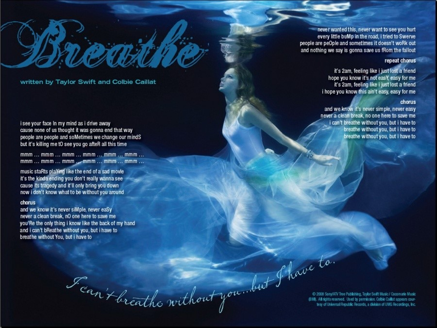
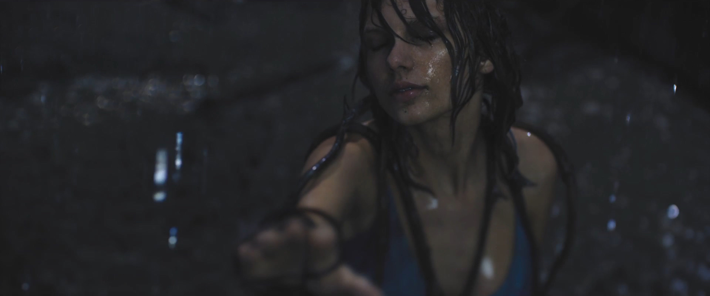
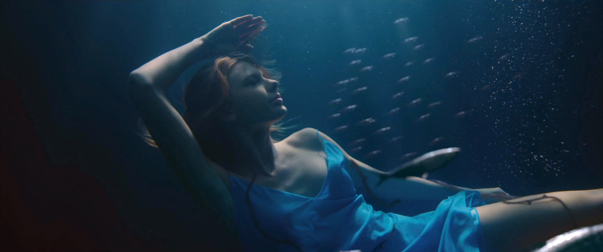
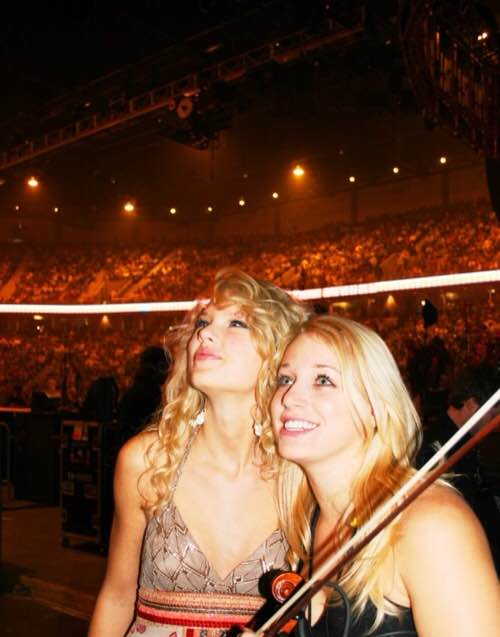

番外2 - Another Love Story
这是一篇计划外的番外。
这个人所处年代太久远，远远超出了本文设定的2012-2014年的范围，所以之前完全没有想过要写这个。
之前连续写了几首RED的个人解读，想着干脆把这首歌也写一写吧，于是就有了这篇，虽然属于RED，但与正文主题无关，就放在番外了。
这篇涉及到3首歌，所以是篇幅最长的番外。
假作真时真亦假，无为有处有还无，尽信不如不信，不妨还是当作同人文来看吧。
Holy Ground 圣地
隐藏信息：When you came to the show in SD
SD是一个地名的缩写，TS在这里开过演唱会，检索Fearless和Speak Now的巡演日程，演唱会到过的SD缩写的地区是：
1. San Diego，加州城市圣地亚哥，Fearless巡演2009年5月24号，Speak Now巡演2011年10月20号，在这里有演唱会；
2. South Dakota，南达科他州，Fearless巡演在该州的Rapid City设有一站，之后TS都未在该州开过演唱会；
Holy Ground作为4专RED中的一首歌，SD最大的可能就是指Speak Now巡演2011年10月20号San Diego站。
这首歌广为流传的说法是写TS的第一任（圈内）男友Joe Jonas，理由如下：
1. Speak Now中的Last Kiss是写他的，里面有句歌词
I'm not much for dancing，but for you I did
Holy Ground里有一段
Tonight I'm gonna dance for all that we've been through.
But I don't wanna dance if I'm not dancing with you.
Tonight I'm gonna dance like you were in this room.
But I don't wanna dance if I'm not dancing with you.
两首歌中关于dance的描述很相似；
2. Holy Ground里写了"Back to a first-glance feeling on New York time"还写了"We had this big wide city all to ourselves"，2008年8月他们曾一起待在纽约，并传出绯闻；
3. Holy Ground里写了"for the first time I had something to lose"，"I guess we fell apart in the usual way"，媒体把这首歌解读为a young woman finally at peace with her first love；
4. 媒体说the song talks about a relationship that hurt her a lot, but looking back, it was good，这段往事可能是Joe当初劈腿卡米拉，27秒电话分手，给TS造成很大伤害；
5. Joe Jonas在2011年夏天去看了TS的Speak Now演唱会，符合隐藏信息的描述；
不过我一直认为这些论据并不成立。
首先，涉及Dance以及New York的联系牵强，TS非常多的歌里都谈到各种dance，Back to a first-glance feeling on New York, 她和Joe在一起时也不是第一次去NY了；
其次，Joe Jonas不是她的first love，不是她的第一个男友，也不是第一个劈腿的男友
在2004-2006的高中阶段
高中一年级（04下），TS暗恋过一个男生Andrew (Drew) Hardwick，他们是好朋友，但是Drew喜欢另一个女生，常跟TS聊到那个女生，TS不敢表白暗自伤心，然后写了< Teardrops on My Guitar >；
高中一年级（04-05），TS有个短暂的男朋友Jordan Alford，没多久Jordan就甩了TS和TS的好朋友Chelsea在一起，Jordan后来还和Chelsea结婚了，他们三人都是同学，TS给他写了一首< Picture to Burn >，Chelsea后来还接受采访说到这首歌，还说到首专发行后同学们都在欢快的讨论哪首歌是写谁的；
高中一年级（05上），TS认识一个即将毕业的男朋友Drew Dunlap，后来这个男生去读大学就和TS分手了，2005年5月TS为他写了< Tim McGraw >。< Our Song >也是写给Drew的，包括后来的< Fifteen >写的还是自己和Drew以及好友Abigail和她男友在高中时的经历，TS说过Drew是她的first date和first kiss（全班最后一个kiss的女生），"Back then I swore I was gonna marry him someday, but I realized some bigger dreams of mine",曾经觉得自己某天会嫁给他，可是后来发现自己还有更大的梦想要去实现，这些发生在TS15岁高中一年级时；
高中二年级（06上），TS有个短暂的男友叫Sam Armstrong，TS对他了解不多，后来这人劈腿，TS就写了< Should've Said No >；
之后直到2008年7月，TS都没有男朋友；
为什么这么多高中一年级，后面没了，因为2006年6月首单< Tim McGraw >发行，10月同名首专发行，她忙得飞起。
She spent much of 2006 promoting Taylor Swift in a radio tour and later commented, "Radio tours for most artists last six weeks. Mine lasted six months."
她在2006年花了大量时间通过radio tour（开车去一家家电台宣传打歌）的方式宣传同名首专，“大多数艺人的radio tour只持续6周，而我的持续了6个月”。
2008.7-9月才是Joe Jonas，然后他劈腿Camilla Belle；
"for the first time I had something to lose"说是指Joe Jonas，牵强；
最关键的一点，Joe Jonas没有去看10月20号San Diego站的演唱会，他去的两场是8月28的LA站和9月1号的San Jose站。这跟Holy Ground的隐藏信息When you came to the show in SD根本对不上号。
那到底是写谁？
一开始我只能排除Joe，到底是写谁我也猜不出，她当时所有圈内绯闻（前）男友都没有去看San Diego演唱会的报道。
曾经我也在想， DA生日那天TS在DA的留言门上写了一个黄段子，Holy Ground中有一句"I left a note on the door with a joke we'd made"，会不会是写DA呢，但这首歌写的是years ago，是过去的人，DA排除。
{kind=link}
之后很久我都想不出这首歌的归属，直到去年年底我重新听RED突然有了新感受。
歌词和隐藏信息里写着
When you came to the show in S.D.
Holy Ground是TS得知某个人来看她圣地亚哥演唱会的有感而发。
Sometimes I wonder how you think about it now and I see your face in every crowd
既然是因为这个人来看演唱会的有感而发，这里的crowd就是指演唱会的观众，就像TS说上海三场演唱会中的观众是"three of the best crowds in entire 1989 world tour"。TS时常会想，这个人现在会怎么看待那段过往，她时常会在面对观众时想起这个人。
Right there where we stood was holy ground
我们曾经站的那个地方就是圣地。
哪里能被TS称为圣地？一起待过的房间，一起走过的街道？都太轻了。
这个人来看演唱会让TS有所触动，TS每次看到观众都会想起这个人的脸，这可能是个和演唱会、演出有关的人。
两人曾并肩站在一起的地方，能被TS称为圣地的地方，就是舞台。
也许这是一个
曾和TS并肩站在一个舞台上
跟随TS一个城市接一个城市演出
后来又离开TS的人
看到这里很多人应该知道我想起谁了：Emily Poe
2008年底发行的二专Fearless中有一首< Breathe >，是TS与Colbie Caillat合作完成，国内外粉丝普遍认为这首歌是为Emily Poe而写。
Breathe的写作时间：
Swift was very fond of Caillat's 2007 debut album, Coco. Swift explained, "When it came out, I fell in love with the way that she makes music. Swift later contacted her management and asked if she could write a song with Caillat. They confirmed Caillat would be available due to a then upcoming concert in Nashville, Tennessee and, coincidentally, on the same day, Swift had a vacation day.
2007年Colbie Caillat发行首专Coco，TS很喜欢，“它一发行我就爱上她的写歌方式”。TS之后联系Caillat的经纪人询问是否可以和Caillat合作一首歌，他们确认好时间，Caillat在田纳西纳什维尔将有一场演出，恰好TS那天休息。
TS在2007年12月5号在Myspace上写着：
It’s Colbie Caillat!! She was doing a show in Nashville and I just happened to be in town, so we got together and wrote a killer song. It’s really cool, and I can’t wait for you to hear it. She’s gonna record back up vocals on it for my new album.
从TS的表述来看，Breathe在12月5号之前已经完成了，而且是刚完成不久。
时间范围是Colbie首专Coco发行（2007年7月17）之后，2007年12月5号之前不久，Colbie在纳什维尔有演出，而TS正好有空的一天。
对照她们两人的行程，Colbie Caillat在10月-12月间只有11月30号在纳什维尔有演出。
TS 11月19号之后一直待在纳什维尔休息，29、30号有演出；
CC 11月26号在英国，11月30号在纳什维尔；
她们共有的空闲时间是11月27、28号，这是最符合描述——“CC即将在纳什维尔有演出，而TS正好放假待在纳什维尔”的时间，这个时间又非常接近（TS在Myspace上说Breathe已经完成的）12月5号。
所以基本认为Breathe写于11月27或28号。
Breathe的写作背景：
It's a song about having to say goodbye to somebody. But, it never blames anybody. —— from Fearless Cut by Cut
Breathe写的是必须要和某人分开，但这样的结果并不能责怪任何人。
When it's nobody's fault. It just has to end. —— from Making of Breathe
这不是任何人的错，但是这段关系必须结束。
One of my best friends, I'm gonna have to not see anymore and it's not gonna be part of what I do. It's the hardest thing to go through. —— from Making of Breathe
我将再也不可能见到我最好的一个朋友，这是我绝不愿发生的，这是我经历过的最艰难的离别。
It's crazy listening to the song because you'd think it'd be about a relationship, but it's really about losing a friend and having a fallout, just the loss. —— from Making of Breathe
你听着这首歌会觉得这是关于一段恋情的，但其实这说的是失去了一个朋友以及之后的失落心碎。
The story about saying goodbye to someone when you don't want to, because you can't breathe without them. —— from Taylor Swift's Myspace 2008.11.10
这首歌是关于我不想和一个人分开却不得不分开，失去他（她）让我无法呼吸。
（TS使用they / them来表示性别模糊的第三人称单数的其他例子请看番外3 - TS使用的性别中性代词）
关于Breathe为谁而写以及两人不得不分开的原因，粉丝和媒体的解读：
"Breathe" is thought to be about Emily Poe, the original violinist in Taylor's band, who departed in December 2007.
Breathe据说是写Emily Poe，她是TS乐队中最初的小提琴手，2007年12月离开乐队。
It is about a good friend of Taylor's, Emily Poe. Emily toured with Taylor for two years as her fiddle player. It is not exactly known why she left the band, but she left it in 2008 and went to law school at the University of Tennessee.
写的是TS的好朋友Emily Poe，Emily作为小提琴手跟着TS巡演2年。我们并不知道她离开乐队的确切原因，但她2008年离开乐队后就读了田纳西大学的法学院。
Breathe is, for various reasons, widely believed to be about Emily Poe, who either left or was fired from Taylor's band. And, among other things, the writing process was described by Taylor as a catharsis for the loss of a 'friend'.
Breathe，出于种种原因，被广泛认为是写Emily Poe，她自愿或被解雇而离开TS的乐队。Breathe这首歌，据Taylor描述，是写失去一个“朋友”。
Emily was Taylor's first fiddle player and a close friend. Taylor's management said Emily left in 2008 to attend law school. She did go to law school – but that's not why she left. They fired her. No reason was given to Emily and a new fiddle player was hired immediately. Taylor never talked to her again.
Emily是TS的第一个小提琴手也是她的好朋友。2008年初TS公司管理层宣布Emily要去读大学所以离开了TS团队，她后来的确去读法学院了 – 但这不是她离开的原因。他们解雇了她。没有解释，他们立刻雇了一个新的小提琴手。之后TS再也没有见过Emily。
整个时间经过：
Emily作为TS乐队最早成员之一，她在TS身边的时间是2006（具体月份未知）-2007年12月，就是TS忙着发首专没有男朋友的那段时间。
2006年6月TS发行首单< Tim McGraw >，2006年10月发行同名首专，首专的宣传是一边进行radio tour（一家电台接一家电台的去做宣传），一边为其他乡村音乐歌手的巡演当开场嘉宾，包括Rascal Flatts、George Strait、Brad Paisley、Tim McGraw和Faith Hill，TS和她的乐队成员们跟着这些歌手坐着巡演巴士跑遍美国，在Journey to Fearless的演唱会官方视频中她描述这段经历是：Those were some of my favorite times。
2007年上半年的某时候（6月份或之前），TS为Emily制作了一个视频，这个视频最初放在她的Myspace上，后来删掉了。有网友下载下来传到了Youtube上，我看到的最早的视频上传时间是2007年6月3号，视频说明中写着：
This is a video on Taylor Swift's Myspace that she made for her fiddle player Emily-- It's got all kinds of video of them on the Brad Paisley tour, plus Kellie Pickler, Jack Ingram, Brad Paisley, and Jason Alexander from Seinfeld are in it. it's really cute.
TS选的背景音乐是Dashboard Confessional – Stolen
"you've stolen my heart, you've stolen my heart……"
第30秒，墙上贴的TS写给Emily的话是
"Emily —— I feel as if our relationship has been taken to the next level over the past few months and with much contemplation I decided I would bestow upon you one of my most prized possession: my flamingo bandana. This is a 3rd generation family heirloom and I suggest you frame it. I think it will look perfect in your apartment with the cat pillows. Enjoy"
在Making of Breathe里说写的不是relationship……这不是relationship吗
第55秒，Emily的那个猫枕头好像这张……
{kind=link}
TS联系Colbie Caillat的经纪人，希望两人可以合作一首歌。
2007年11月27、28号，TS和Colbie Caillat合写了Breathe，这首歌在最后连唱7遍Sorry Sorry Sorry……，隐藏信息是IM SORRY IM SORRY IM SORRY。
2007年12月13号，TS18岁生日那天Emily还在，留言墙上有她的名字。
{kind=link}
Emily在2011年接受采访时说"The last week I was working for [Taylor], Our Song was number one"，在她为TS工作的最后一周里，Our Song登顶了Billboard乡村音乐榜。Our Song登顶是在2007年12月13号TS生日那天。
基本上可以认为Emily给TS过完18岁生日就离开了。
2008年初，公司对外宣布Emily要去大学读法学院离开了乐队，并立刻雇佣了新小提琴手。
2008年11月11号，二专Fearless发行。
Breathe这首歌TS一次都没有现场唱过。
关于Breathe和Emily一直有这么几个疑团：
1. Breathe是不是写Emily？
TS几乎从来不指明她的歌是写谁，除了歌名或隐藏信息里直接写出名字的那几首，比如Ronan，for Ethel的Starlight等等。
虽然Breathe普遍认为是写给Emily的，但也有并不是写给她的可能性，就像IKYWT都觉得是写HS的，实际并不是。
据说TS对合作者Colbie Caillat说过Breathe是写Emily的，但我没有翻到出处。
如果不是写Emily，那又会是写谁，在2007年11月前后离开TS的一个"You're the only thing I know like the back of my hand"般亲密的朋友，除了Emily似乎没有其他人了。
2. Emily离开TS团队究竟是因为读大学，还是被解雇的？
如果Breathe是写Emily的，那Emily一定是被解雇而不是如官方说法中因为她读大学才离开。
如果Emily是因为读大学主动离开TS团队，对TS来说虽然要和朋友分离，但升学总归是件高兴事，又不是不能再见面，可TS说这是她经历过的最艰难的离别，她之后也再没见过Emily。
前面提过TS的first date first kiss，她的第一个男友Drew Dunlap，Tim McGraw、Our Song、Fifteen都和他有关，这可是名副其实的第一个男友，他同样是上大学离开TS，TS可没觉得有多艰难。
如果Emily是因为读大学主动离开TS团队，那这分离根本不是TS的错，那Breathe中这么多次的I'm sorry是为哪般？
TS说it's nobody's fault, it just has to end，不是她的错，也不是对方的错，但她仍然要说sorry，为什么？因为是她的公司，是2个Scott（大机器老板Scott Borchetta和她爸Scott Swift）决定解雇Emily，让她离开团队。
3. Emily被解雇的时间以及TS是否知情？
前面已经找出了TS写Breathe的时间，这个问题就好回答了。
Cause none of us thought it was gonna end that way
But it's killing me to see you go after all this time.
Never wanted this, never wanna see you hurt
And nothing we say is gonna save us from the fall out
从上一点，以及Breathe的歌词可以看出，Emily的离开并不是或者并不完全是她自愿的，TS才会觉得Sorry，才会觉得难以接受，而且无论她抗争与否，她都改变不了最后的结局。
TS在Emily真正离开前写了Breathe，她是知情的。由此也可以看出公司要解雇Emily的决定并不是立刻执行，而是有缓冲期。
另一方面，美国大学的申请时间是每年的年底，Emily在2008年能成功就读田纳西大学法学院，她在2007年年底是有提交过申请的，这个申请如果是到12月中下旬她离开乐队时才交未免有点晚，选择学校专业、准备材料写申请都需要时间。
公司出于某种原因，必须让Emily离开，他们或强硬或温和的告诉Emily基于某些原因他们希望Emily能离开乐队，去读书或者换个地方工作都行，这样对大家都好。正好Emily本人也有想读法学院的念头，她就在2007年底的大学申请季提交了申请，在TS生日过后离开了乐队。
写Breathe是11月底，TS向Colbie提出合作邀请并等待两人都有空闲时间在此之前，公司要求Emily离开最晚在11月。
4. 如果是被解雇，解雇的原因是什么？
it's nobody's fault
it never blames anybody
Emily的水平不行，人品不好，做了错事？都不是
It just has to end
这段友情必须终止
粉丝一直有种猜测，不是任何人的错，不怪任何人，但是必须分开的理由，是一种存在，它本身没有错，却会（给TS）带来不好影响，它必须被终止。
这就是TS和Emily之间已经不只是友情了，这一点在看TS为Emily做的视频中可以隐约感受到，墙上TS写给Emily的话，TS让工作人员和父母陪着自己展示写有"I Love You, Emily"的纸，背景音乐是"you've stolen my heart"。
在出了名保守的乡村音乐界，TS才刚发首专，这种事是绝对要断送前程的。对少男少女偶像明星来说，即使是异性恋情都会被公司干涉，比如当年的贾老板和布兰妮，更不要谈同性恋情了。公司对待TS和Emily，最直接有效的方式就是让Emily离开。
it's nobody's fault, it just has to end
在情感上她难以接受，对她来说这是最艰难的离别
在理智上她接受了这个结果，她知道分离是为什么，她不怪任何人，她没错，Emily没错，公司也没错。
但她始终觉得自己亏欠Emily，不能释怀，所以一遍遍的说着IM SORRY，也从不在现场唱这首歌。
在1989中我一直觉得This Love和Clean这两首与水有关的歌，尤其是Clean配上Breathe的图是非常适合的。
I can't breathe without you, but I have to
恰好OOTW的MV是OOTW和Clean的融合，然后我们看到了类似的画面。
 Rain came pouring down when I was drowning
That's when I could finally breathe
在2007年12月5号的Myspace上，除了说自己与Colbie Caillat合写了新歌外，TS还谈到了新专辑的录制，从下面这段中我们可以看出，她已经准备了很多歌，到了年末录音季，她会先和制作人对歌曲进行筛选，安排录制的先后顺序。（这是她的制作模式，到了1989时代依然如此，她先放歌给Max Martin听，放到第3首是Blank Space，然后Max说别的不慌今天先录这个）
Speaking of my next album, today was my first day in the studio "pre-planning" for recording it!! My producer, Nathan, and I basically spent all day listening to songs and picking which ones to record first
Fearless的录音分了3个时期，2008年1月前录了一半，3月份录了6首，剩下的安排在暑期录完。
Emily最晚在2007年11月被告知要离开TS乐队；
TS邀请Colbie Caillat与她合作一首歌，基于两人的日程，这首歌在2007年11月底完成，是二专中最早录完的歌，TS到了12月才开始pre-planning其他歌的录制计划；
Emily在2007年12月13号TS18岁生日之后离开；
2008年3月，TS录完了另一首歌，这首歌的灵感来源于她喜欢一个人，但父母强烈反对，朋友们也不接受，无疾而终。
相似的是，都是被拆散
不同的是，TS在这首歌中改编了结局，给了歌中人物一个Happy Ending
这就是大家熟知的< Love Story >
TS在高中和Abigail一起上英文课时，她们还对罗密欧与朱丽叶的故事十分嗤之以鼻，那时她没有经历过，她不能理解这个故事中人物的情感。
Speaking about their first bonding experience to biographer Liv Spencer, Abigail recalled: 'We were the ones in the back of the class saying negative things about Romeo and Juliet because we were so bitter toward that emotion at the time.
而之后她却基于罗密欧与朱丽叶的爱情悲剧写了Love Story，她经历过了，她理解了，她希望自己歌中创造的人物能代替她摆脱现实的困境，书写“爱能战胜一切”的童话，这是她无法做到却憧憬的。
Love Story的隐藏信息：SOMEDAY I'LL FIND THIS
Love Story大家很熟，写作背景简而言之就是
在她17岁时，父母强烈反对她和一个人交往，于是她回到房间，关上门趴地上花20分钟写了Love Story。
17岁，也就是她在2007年12月13号（18岁生日）之前就写了Love Story，只不过到了2008年3月才录制。
但是下面这一段描述就有点让人深思了：
{kind=link}
It's about a love that you've got to hide because for whatever reason it wouldn't go over well. I spun it in the direction of Romeo and Juliet. Our parents are fighting. I relate to it more as a love that you cannot really elaborate on — a love that maybe society wouldn't accept or maybe your friends wouldn't accept.
喜欢一个人，但是父母朋友都不接受都嫌弃，这种事很常见，但是和那个人恋爱会糟糕到连社会都不接受的程度，这就不寻常了。
*注释：< Love Story >从2008年9月发行到现在，从TS本人口中说出的关于这首歌的写作背景，在不同时期，变了好几个版本，本文中只简要摘录几段，关于这首歌更详细完整的介绍请参考下文：
Cause you were Romeo, I was a scarlet letter
And my daddy said "stay away from Juliet"
美国是一个保守的清教徒国家，在旧时，通奸Adultery、淫欲Lust、异端Heresy在清教徒社会被认为是罪（同性恋被视为异端），scarlet letter便是清教徒对以上“罪人”的惩罚，让其在胸前佩戴红色字母A的标记。
TS在Love Story中用"scarlet letter"这个词是诡异和不同寻常的，无论是在歌词或是她自己对这首歌写作背景的解释中，都没有丝毫Adultery或Lust的存在。"scarlet letter"用在此处，从狭义上理解，她指自己在世俗眼中是“异端”（所以才会说"society doesn't want them to be together"，"society wouldn't accept"），从广义上看，她指自己的恋情是禁忌之恋违背世俗的。
对比Love Story和Breathe的背景
| 17岁 | 2007年下半年 |
| 父母强烈反对 | 公司解雇了Emily |
| 不会被社会接受，无疾而终的恋情 | 明明都没错却不得不分离的两个人 |
| 写于2007年12月13号之前 | 写/录于2007年11月底 |
我不会说Love Story和Breathe一定来源于TS的同一段经历，但是这两首歌的背景、时间的确非常接近。
如果它们来源于同一段经历，这就是一蒂双生花
写出真实结局和情感的Breathe，没有一次现场演唱；
改写结局，寄托希望与期待的Love Story，传唱至今；
SOMEDAY I'LL FIND THIS，希望有一天她真能做到。
四年后，2011年
Speak Now World Tour
When you came to the show in S.D.
Back to a first-glance feeling on New York Time
Back when you fit in my poems like a perfect rhyme
Took off faster than a green light "Go"
Yeah, you skipped the conversation when you already know
I left a note on the door with a joke we'd made
And that was the first day
07年首次在New York演出，你的小提琴，我的吉他，你我的默契，贴在墙上的玩笑
再回首往事如风，这是一切开始的时候
We blocked the noise with the sound of 'I need you'
And for the first time I had something to lose
And I guess we fell apart in the usual way.
周围人唧唧歪歪，我们只听到自己的心声"I need you"
成为歌手后，第一次体会到，有些事是我不得不失去的
被拆散这也是这行业里挺常见的分离方式
And the story's got dust on every page
TS在Speak Now巡演的每一场都会在自己左手臂上写一句不同的歌词，在10月20号San Diego站她写的是："Memories fade like looking through a fogged mirror"，这两句是差不多的意思。
手臂上的这句歌词来自MGMT – Kids，媒体解析TS引用这首歌是想表达："The message has to do with controlling impulses or being told to control impulses"控制自己的冲动或被人要求克制自己。
But sometimes I wonder how you think about it now
And I see your face in every crowd.
有时我想知道你现在是怎么想的
每次面对欢呼的人潮我都仿佛看见你的脸
Tonight I'm gonna dance for all that we've been through.
But I don't wanna dance if I'm not dancing with you.
今晚我会在我们曾经共舞的舞台上载歌载舞
只是你不会再站在我身边
darling, it was good
never looking down
你有你的新生活，我也走上我期望的路，这样很好
（1个月后，2011年11月Emily就结婚了）
Right there where we stood was holy ground
PS: 我并不知道Emily有没有去过San Diego演唱会，她是普通人媒体不会报道，去没去只有她自己和TS知道。